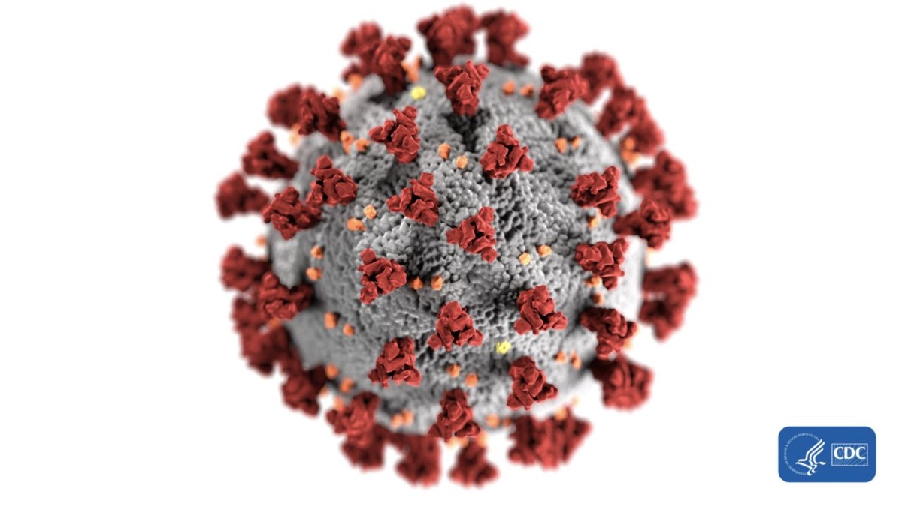

Featured Project
COVID Portfolio Project
Overview
The workflow uses separate source workbooks for deaths and vaccinations. The analysis SQL explores the records, and a separate preparation script shapes them for Tableau.
The linked dashboard is the interactive view. The workbook and both SQL files document the steps behind it.

Alissa Eckert and Dan Higgins / CDC (public domain)
Tools
Project files
- Open Tableau dashboard for COVID Portfolio Project (opens a new tab)
- COVID analysis SQL for COVID Portfolio Project (opens a new tab)
- Tableau preparation SQL for COVID Portfolio Project (opens a new tab)
- Tableau workbook for COVID Portfolio Project (opens a new tab)
- Deaths source workbook for COVID Portfolio Project (opens a new tab)
- Vaccinations source workbook for COVID Portfolio Project (opens a new tab)